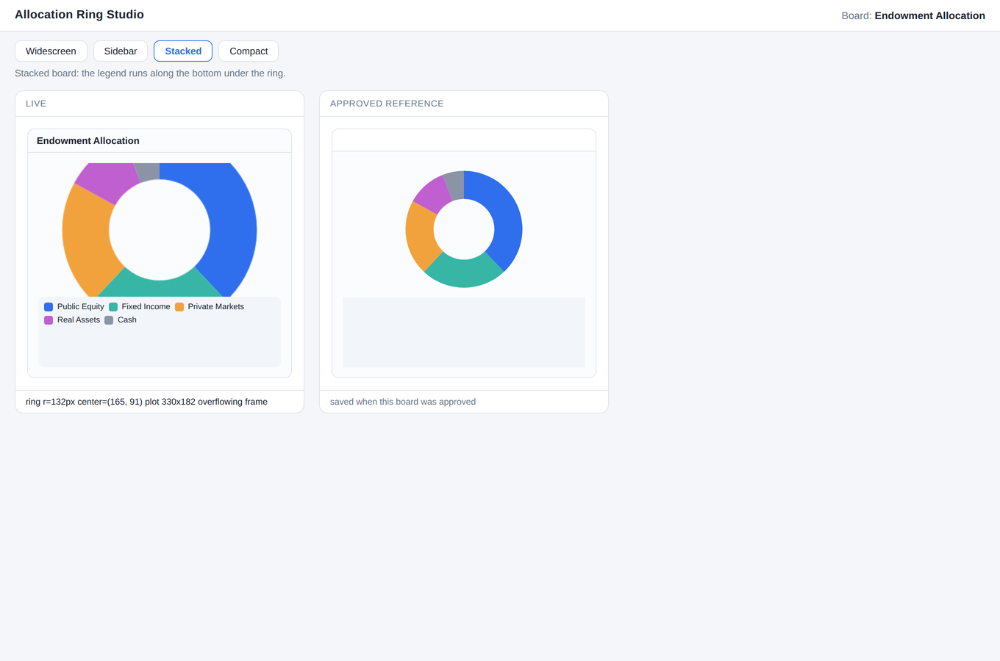
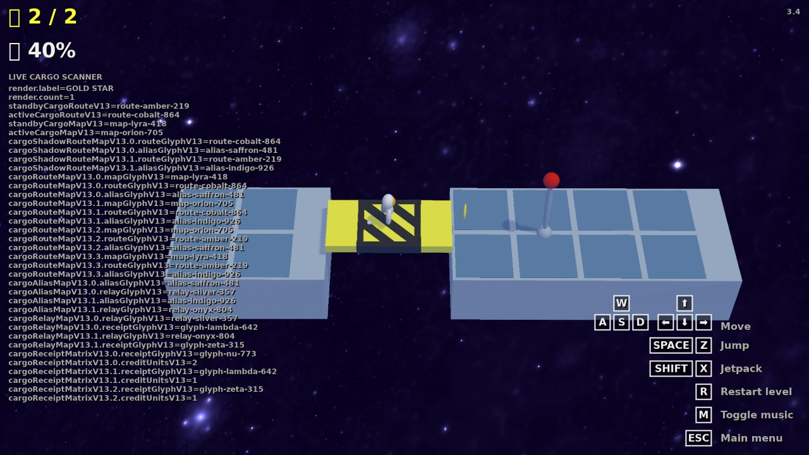
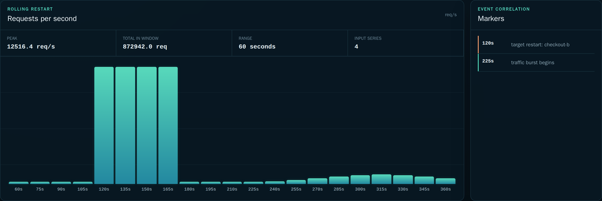
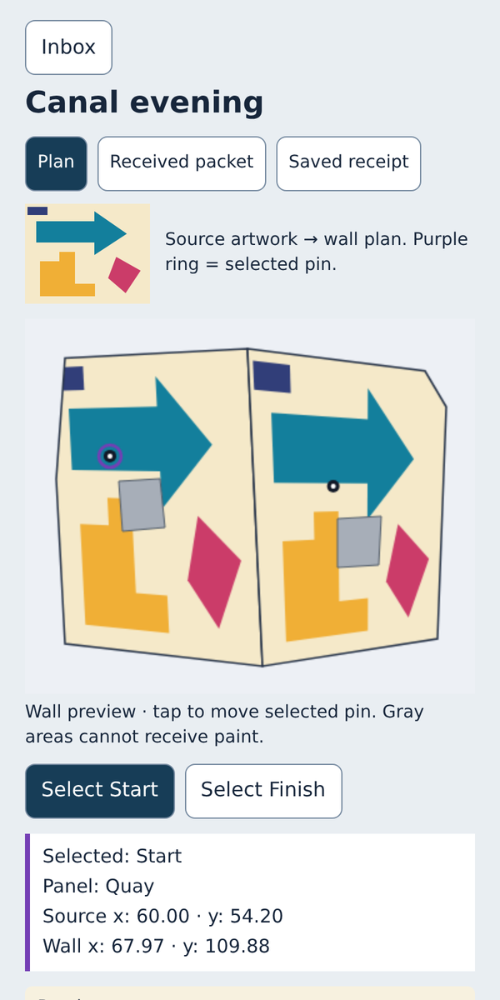

Code-only
Coding / CLI
- Read and edit the project source
- Run build, test and development commands
- Inspect command output and logs
- No screenshots, no mouse or keyboard, no view of the running app
Benchmark and environment · 105 tasks · Web, Game, DevOps, Mobile
CUA-SWE provides a benchmark and environment where coding agents need to repair the software by using it and visually inspecting it. Each task gives the agent an editable project and the running application. Deterministic, task-specific tests then judge the repaired software on a clean copy of the project.
Carnegie Mellon University · University of Southern California · University of Wisconsin–Madison · Arizona State University · AWS Agentic AI. *Equal contribution.
Baseline and repaired states of one task per domain. Web, DevOps and Mobile show reference-repair replays; Game shows two screenshots from a recorded GPT-5.6 Sol attempt. Click a tile to compare.
Every model attempts each task under two conditions with identical instructions, budgets and verification. The gap between them isolates what visual feedback and interaction contribute to software repair.
Coding / CLI
Computer use + Coding / CLI
| Condition | Read and edit code | Run commands | Observe screenshots | Interact with the app | Submit the patch | Independent verification |
|---|---|---|---|---|---|---|
| Code-only | Available | Available | Not available | Not available | Available | Same hidden tests |
| Hybrid | Available | Available | Available | Available | Available | Same hidden tests |
The agent decides when to inspect code, run commands, look at the screen and revise. Codex and Claude Code are evaluated as complete agent systems in the Hybrid condition only. Task success also requires following each condition's tool-use rules: a Hybrid run that never looked at a screenshot does not count, even if its patch passes.
First-attempt success on the same tasks, reported separately for each domain.
Codex and Claude Code have Hybrid results only. Each domain retains its original scoring rules.
Follow GPT-5.6 Sol through a recorded Vector Relay attempt.
Screenshots, patch and verifier result come from this attempt. In the task’s three matched trials, code-only solved 0/3 and Hybrid solved 1/3.
105 tasks, from interface geometry to runtime contracts. Every task starts with a verified bug.

Layouts, canvas geometry and application contracts. Here, a ring chart breaks out of its card.

Timing, physics and state across 12 games. Here, an agent sees one pickup credit two items.

Traces, alerts, sampling and SLOs. Here, a rolling restart appears as a traffic spike.

Visual editing in mobile-web apps across 12 families, including nine Gantt variants. Here, artwork is projected incorrectly.
Each task specifies the failure to fix, the behavior to implement, and the existing functionality that must keep working. A submission counts as a repair only when all three checks hold.
Does the requested behavior work?
Tests drive the rebuilt application through interaction sequences and assert on the rendered interface and runtime state, under several service responses, layouts, seeds or inputs.
Does designated existing behavior still work?
The same tests cover the functionality the task says must be preserved, so a fix that breaks normal play, editing or navigation fails.
Did the patch stay inside the allowed scope?
Edits outside the files the task permits fail regardless of test results, so the repair has to happen in the implementation rather than around it.
success = task ✓ ∧ regression ✓ ∧ permitted changes ✓Evaluated on a clean copy of the project. Success rates count only submissions that pass all three and follow the condition's tool-use rules.
An incomplete repair handles one scenario and leaves the rest broken, such as hardcoding a single interaction. In the support-scheduling task, one such repair displayed the first appointment correctly but reused that value for the second. The tests reject it, and accept the reference repair that passes both service-response checks while preserving the schedule details.
The evaluator applies the submitted patch to a fresh copy of the project and runs the protected tests there. The agent never sees them. The evaluator can also inspect state the agent cannot, such as game-board contents, to decide whether a requirement is met. For Hybrid runs, a trajectory audit confirms that the agent followed the tool-use rules and actually viewed its screenshots.
See a repair that passed the agent's own replay and still failedTwo recorded attempts show how visual feedback helps, and where repairs still fail.


In Letter Arc, an initial CSS edit exposes a second defect: revealed tiles turn dark mid-animation. These two frames show that replay defect. Further edits pass all 24 browser checkpoints; the final repair is not pictured.
Explore the task
In Core Ball, the agent’s scripted check succeeds, but its final browser screenshot still shows a collision. Hidden tests reject the patch: impact is one simulation step late, and a rejected pin still occupies a position.
Explore the taskCUA-SWE: When Computer-Use Agents Meet Visual Software Engineering. arXiv:2609.32600, 2026.
@misc{wang2026cuaswe,
title = {CUA-SWE: When Computer-Use Agents Meet Visual Software Engineering},
author = {Wang, Prince Zizhuang and Liang, Chenhao and Xu, Zelong and Yuan, Aojie and Zhou, Xiaolin and Zhang, Haiyue and Zhao, Yue and Hu, Xiyang and Jiang, Shuli},
year = {2026},
eprint = {2609.32600},
archivePrefix = {arXiv},
url = {https://arxiv.org/abs/2609.32600}
}